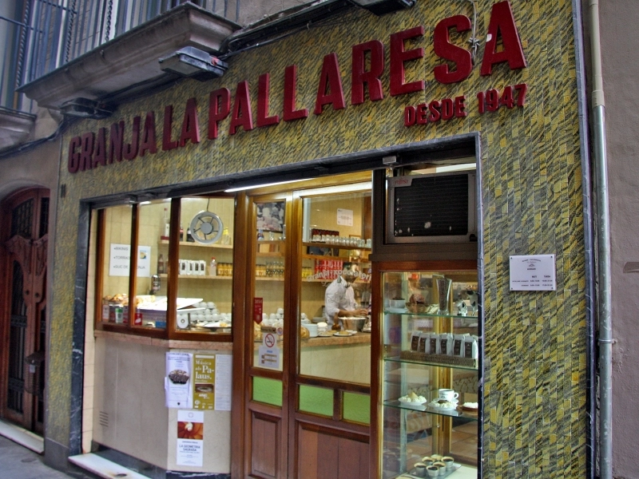

10 d'abril de 2026
Magí i Roser, 1947
Dos noms que van obrir una xocolatera on abans hi havia vaques.

Barcelona, 1947. Fa vuit anys que la Guerra Civil s'ha acabat. El país viu els anys més durs de la postguerra. Hi ha cartilles de racionament, hi ha misèria i hi ha ganes de tornar a una vida amable. El Barri Gòtic és un laberint de cases estretes, carrers ombrívols i botigues petites. El carrer de Petritxol ja té la tradició xocolatera que arrossega des del segle XVIII, però moltes de les seves granges i xocolateries han tancat o languideixen.
En aquest context, un matrimoni català — Magí Cases i la seva muller Roser — va decidir obrir una granja. Al número 11. On feia anys que hi havia una lleteria amb vaqueria al darrere. El negoci de la llet estava a la baixa; el de la xocolata, tot i els anys difícils, encara tenia públic. Van pensar que podrien substituir-ne un per l'altre.
No tenim gaires detalls sobre ells. Els fundadors no acostumen a deixar escrits. Sabem que van treballar durant anys rera el taulell, que van servir xocolata desfeta, mató de Pedralbes, flam, nata, menjar blanc, crema, melindros, xurros i ensaïmades. Sabem que la casa va tenir èxit — no el que avui anomenaríem fama, sinó una acceptació discreta i sostinguda, amb una clientela que tornava. Els esmorzars i els berenars del carrer de Petritxol passaven per La Pallaresa amb una certa regularitat.
També sabem, perquè ens ho han explicat els que van venir després, que Magí i Roser tenien una obsessió: mantenir la qualitat dels productes. Si la xocolata d'aquell dia no havia sortit com havien volgut, la refeien. Si els xurros no eren prou cruixents, es trigava una mica més. La lògica era senzilla: al client li havia d'agafar ganes de tornar.
Aquesta lògica continua aquí. La xocolata, els xurros, el mató, es fan com aleshores, amb els mateixos pobles de referència i les mateixes proporcions. No perquè tinguem por al canvi, sinó perquè ells ens van deixar una cosa bona. No canviar-la és el millor homenatge que els podem fer.